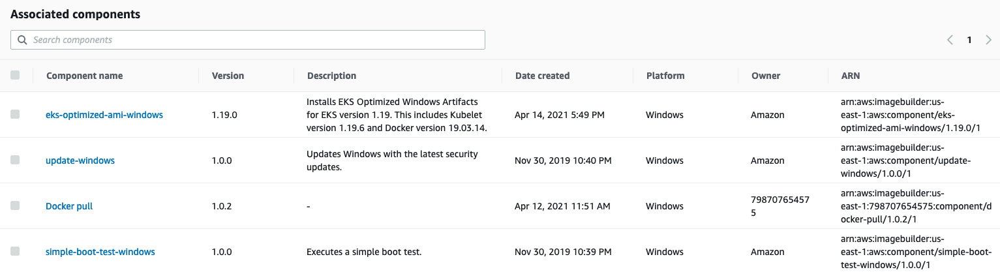
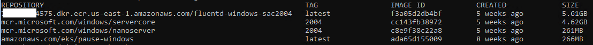
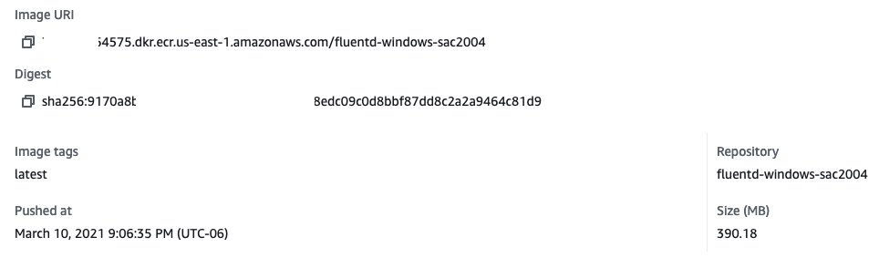

Patching Windows Servers and Containers¶
Patching Windows Server is a standard management task for Windows Administrators. This can be accomplished using different tools like Amazon System Manager - Patch Manager, WSUS, System Center Configuration Manager, and many others. However, Windows nodes on an Amazon EKS cluster should not be treated as an ordinary Windows servers. They should be treated as an immutable server instead, in simple words, avoid update an existing node, just launch a new one based on an new updated AMI.
Using EC2 Image Builder you can automate AMIs build, by creating recipes and adding components.
The following example shows components, which can be pre-existing components built by AWS (Amazon-managed) as well as the ones create by yourself. One component to pay attention is an Amazon-managed called update-windows that updates the Windows Server before generate the AMI through the EC2 Image Builder pipeline.

Combining the EC2 Image Builder to build custom AMI's based on your needs with Launch Templates, allows you to link a new AMI to the Auto Scaling Group created by the EKS Nodegroup. After that is just a matter of terminate the existing Windows Nodes and new ones will be launched based on the new updated AMI.
Pushing and pulling Windows images¶
On Windows Server, by default two base images are part of the OS.
mcr.microsoft.com/windows/servercore
mcr.microsoft.com/windows/nanoserver

In-built-based images are updated following the updates on the main OS. When Microsoft releases a new Windows update that directly affects the Windows container base image, the update will be launched as an ordinary Windows Update on the main OS.
The importance of keeping the environment up-to-date offers a more secure environment at the Node and Container level.
Sometimes, it's questionable the size of a Windows container image and its influence on push/pull operations. It is essential to understand that the servercore or nanoserver base images are already extracted on the Node as an in-built image; during a push operation, only the layers that compose your image are uploaded to the repository.
The following example shows that on the Amazon ECR the fluentd-windows-sac2004 images have only 390.18MB. This is the amount of upload that happened during the push operation.

The output below from docker image ls , the size of the fluend-windows-sac2004 is 5.61GB on disk, but that doesn't mean it downloaded and extracted that amount.
In practice, what happened during the pull operation only the compacted 390.18MB was downloaded and extracted.
REPOSITORY TAG IMAGE ID CREATED SIZE
XXXXXXX54575.dkr.ecr.us-east-1.amazonaws.com/fluentd-windows-sac2004 latest f3a05d2db4bf 5 weeks ago 5.61GB
mcr.microsoft.com/windows/servercore 2004 cc143fb38972 5 weeks ago 4.62GB
In the Size Column show the overall size of 5.61GB. Breaking it down:
Base image = 4.62GB 390.18MB layers extracted = 900MB
The base image already exist on the disk, resulting the total amount in disk is 900MB. The next time you see that amount of GBs in Size, don't worry too much, probably more than 70% is already on disk as in-built container image.